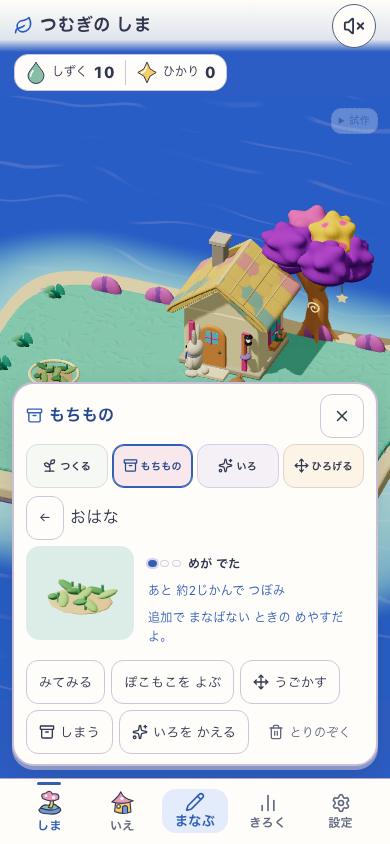
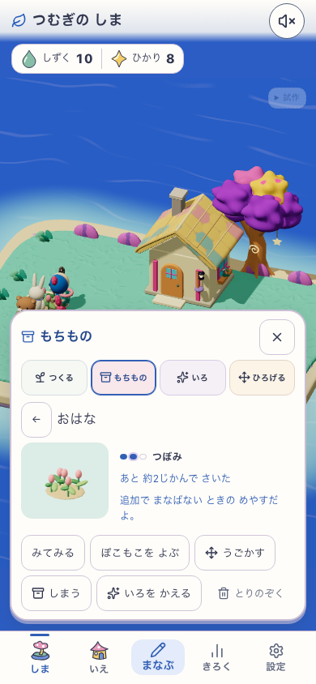
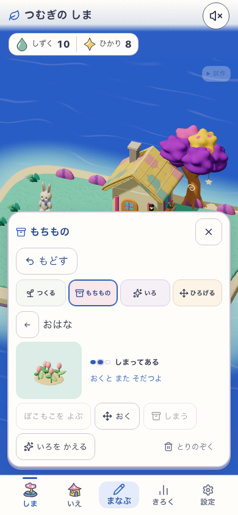
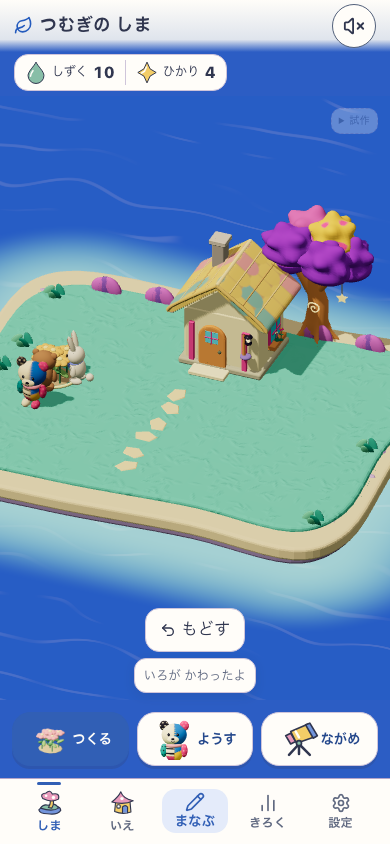
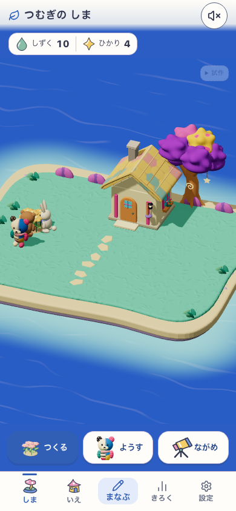

DEV 5223 / island-life-economy-checkpoint-v3 / HEAD 2c75aa3 + working tree / source 6c27e4b8743690ed2b7ac4911ce8d7769a7595be52c5a9e5ba94ae36f3c56693。旧所有・学習creditの明示fixture、Human N=0。C3世界美術の反映前。





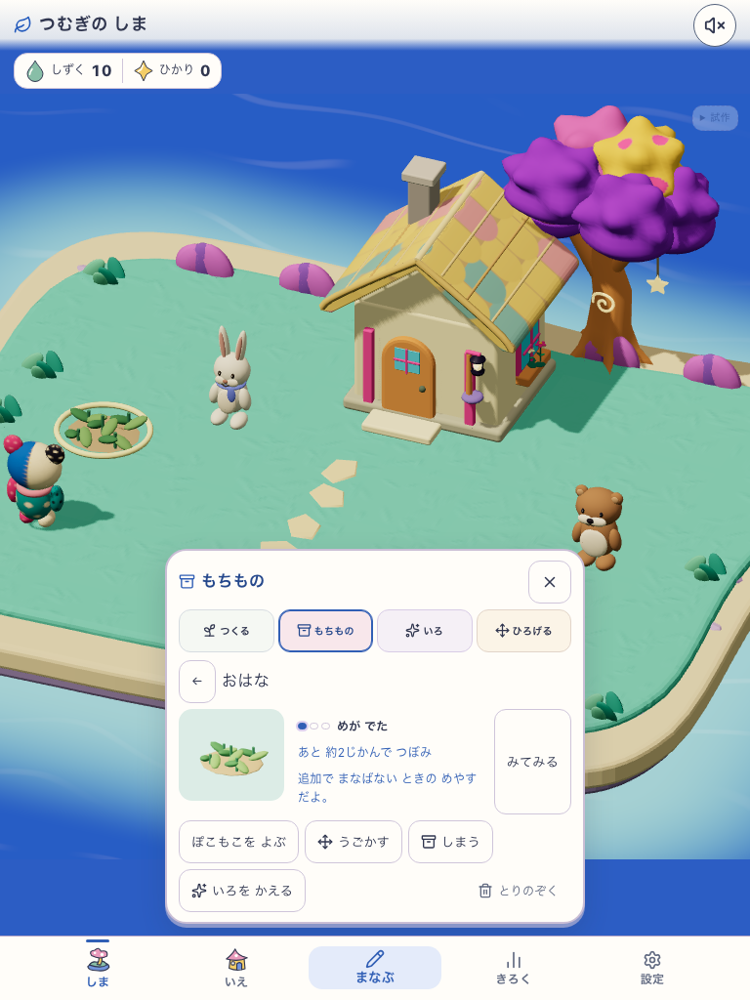
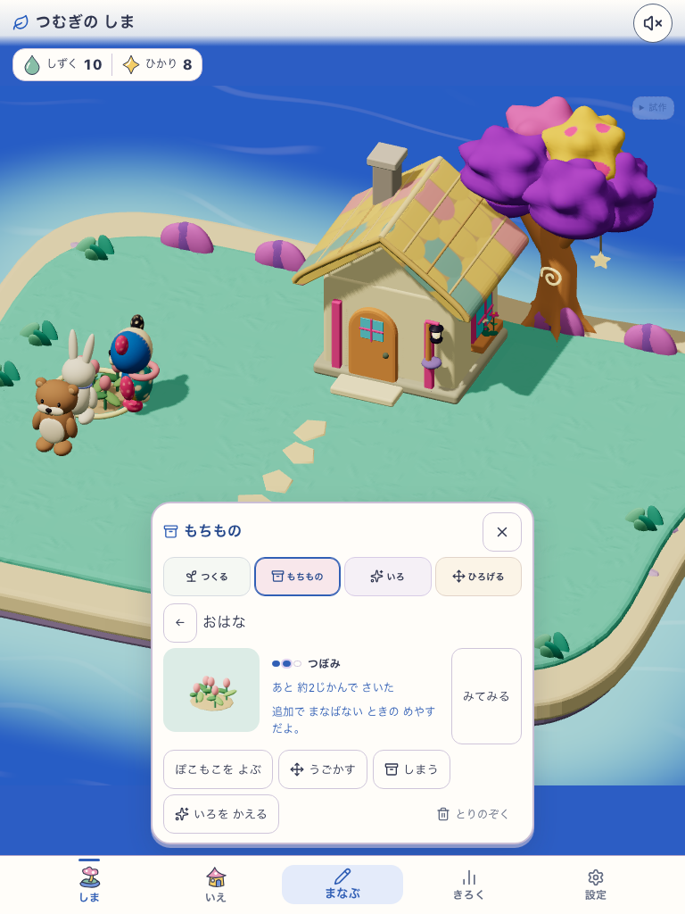
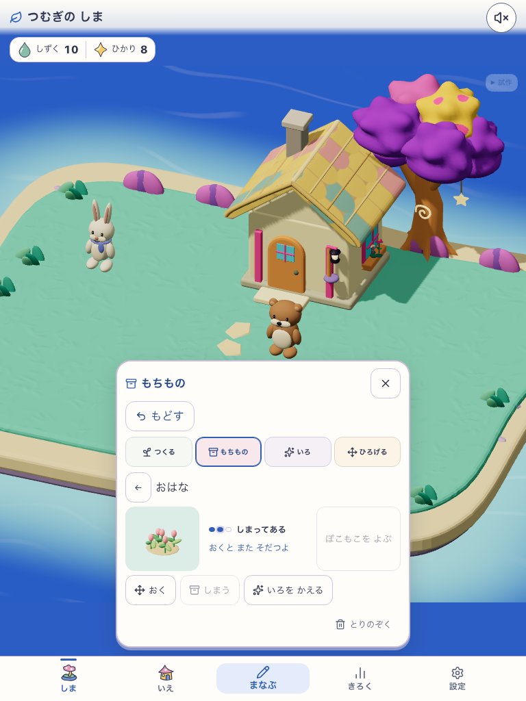
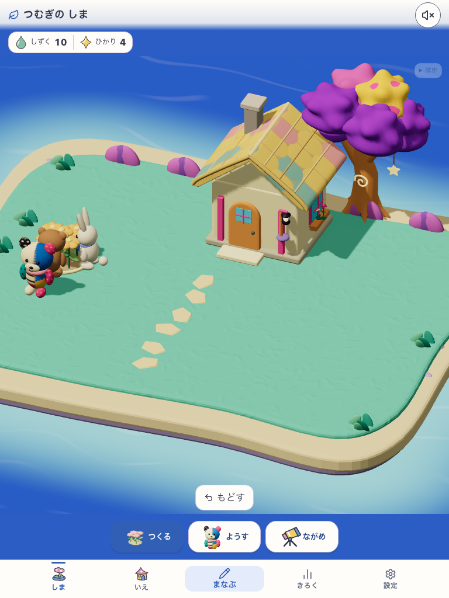
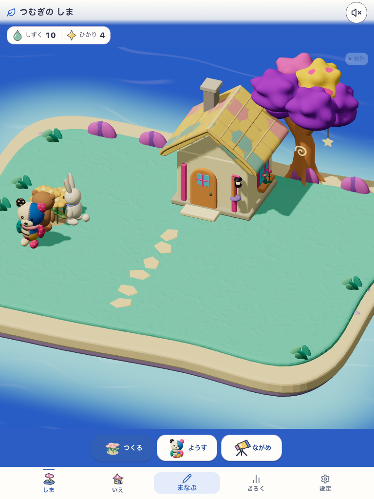
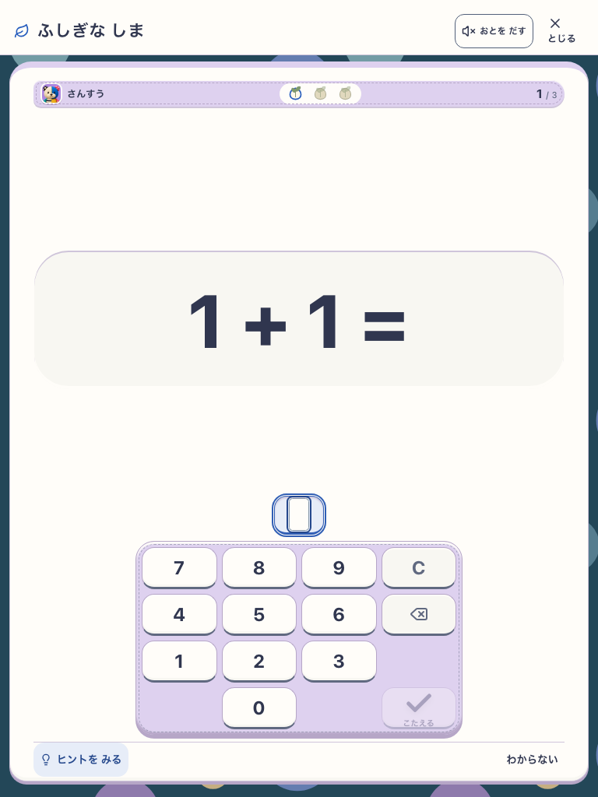